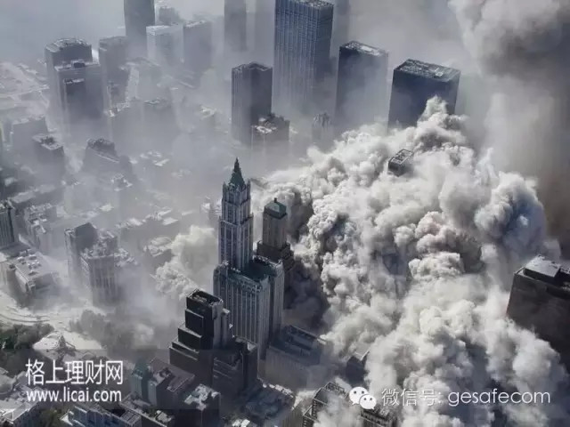

吴晓波：2015年是大企业危机年
剧星传媒2015/6/18 10:41:03

导读：中国着名财经作家吴晓波在厦门发表演讲，阐述了2015年是大企业危机年。吴晓波认为，过去的经验已经不行了，中国大企业面临的危机是系统性 的、生态性的，而人才、资本战略转型是系统性问题，如果你用过去成功的方式走到今天，你会发现如果你不进行变化的话，你一定会被淘汰。
以下是演讲全文：
吴晓波：大家上午好，说到产业的变革，首先要花一点时间谈宏观经济。
4月15日是物价局公布一季度数据的时间，有10个人参加，其中有5个经济学家，去之前我们大家还没有看到最终的数据，但大家都知道，今年的GDP是2014年美国金融危机爆发以后最差的数据。
总理开了两个半小时的会，所有的部长都在，5个经济学家给到总理的意见，其实只有一个意见，就是货币必须更加的宽松。而且5个人里面有3个认为中国和 全球都处在新常态，未来5年内全球经济都好不了，每个国家货币发行的容忍度更大。开完会我说不到一个月就会降息，宏观层面没有太大的办法，我觉得这个应该 是近十年来最大的一次资产泡沫的崛起。
整个数据从去年的四季度以后到今年一季度的，所有的数据都处在下滑的阶段。从宏观来看，实业在往下走，泡沫在往上涨。我们国家最重要的经济智囊之一、国务院发展研究中心副主任刘世锦，在上个礼拜的经济论坛有一个判断，他认为中国经济会在未来的两年内成功探底。
这是一个非常重要的决策层的判断，他认为未来两年我们处在探底的通道中。这个探底怎么达成呢？他用了另外一个词“高投资处理”，通过货币大规模的投 放，来推动产业转型。这一次李总理在经济复苏过程中使用的办法很新，就是拉网抓鱼。湖里面很多鱼，一张网，船往中间挤，所有的鱼都会自己跳起来，政府说未 来一定有相当一部分投资会转移到实体经济。
北京有一个新三板，今年有2000家以上的公司上市，然后加快直接融资，政府通过拉网的方式把资金往资本市场赶，这个就是今天经济的景象，然后就出现 了产业的问题。我们现在的实体经济企业，在未来两三年面对的景象是非常激动人心的一件事情，因为整个宏观处在泡沫时期，未来的波动性非常大。
三次重大产业转型:
1978—1997：从重工型计划经济向产业轻型化转型
1998—2014：从轻型化向重型化转型/从内贸经济向外向型经济转型
2015--未来：从产业重型化向“互联网+新金融”转型
我们看看产业经济的变化，发觉30多年来中国的产业经济呈现出非常有意思的波浪性的变化，在不同的阶段里面，不同的人在不同的行业里面以不同的方式赚不同的钱，这是一个30多年的景象。
1978-1997年，第一个特点是这20年里面所有赚到钱的人都是赚的中国本土市场的钱，是中国内需市场由重工型计划经济向产业轻型化转型，毛泽东 时期军事发展很快，重工业发展很快，东北、华北重工业项目在投，但是老百姓很穷。老百姓需要生活怎么办？毛泽东开始发票据，有布票、粮票、油票……中国是 1993年开始取消票据。
邓小平说要抓吃穿用，还要冰箱、空调、洗衣机。前面的20年是从中共型计划经济向产业轻型化转型，到1997年的时候，中国已经是一个非常繁荣的国家。咱们大家听到“转型升级”——这四个字在第一次出现在中央文件里。
为什么在1997年会发生大的产业转型，1997年发生了一个亚洲金融危机，那个时候中国经济遭到了很大的冲击，特别在1998年，中国民营企业历史 上第一次出现了大规模的倒闭，当时一是银根紧缩，第二个是市场萧条。从此以后，民营企业家开始警惕，我办企业会倒闭，办企业有风险。
1998年全面再造中国的产业经济，发布了非常重要的三个政策：第一个，取消福利分房。之前，我进单位第一件事就说有一套房子给我，当年所有的房子都 是单位给的，1998年取消了福利分房，然后就开始了按揭。当商品房推出以后，中国将进入到货币泡沫化阶段，然后我每年买一套房，跟着泡沫一直涨到今天， 这就是对宏观经济的判断而已。
所以，刺激当时中国经济发展的第一驾马车是以不动产为主的居民消费，你看1999年的富豪榜，中国排在前60位的大都是房地产商。这个现象一直到 2013年，去年十大富豪排行榜里面有5个是搞互联网。再过几年，我觉得中国前十大富豪排行榜的前几位应该是做银行的，做健康的，做能源的，未来大的变 化，基本上都在这个周期里面。
第二驾马车是1998政府逐渐取消了外贸进入中国限制。当时中国的外贸非常差，几十万家中小外贸企业支撑了中国经济的第二驾马车。1998年中央政府 发行了6000亿国债，中国开始修高速公路。高速公路开始修的时候，同时地方政府开始把土地卖给开发商，规定政府征用农民土地的时候，他的最高价格是去年 这块农田种的庄稼的6倍。
所以1998年以后，土地财政在地方财政收入中的比例持续地提高，到今天占到48%。所以我们说城市化建设是1998年以后，你们家乡所有的变化基本 上是1998年以后的，1998年以前是没有怎么变化。1998年以后房地产起来了，背后我们很多的煤炭、钢筋、电力，整个能源产业赚很多的钱，当能源行 业起来的时候，中国经济由一个吃穿用的产业经济机构向重型化进行。
今天，如果我们有计划做一个时光穿梭机回到1998年的时候，你要干的第一件事是什么？买房子来不及了，你干的第一件事应该是跑到山西去找一个小煤窑签一个协议，做煤老板，这个就是红利问题，从轻型化向重型化转型，从内贸经济向外向型经济转型。
四大新动力：新实业、新消费、新金融、新城镇化
四大新动力之一：新实业
2015年的今天，房地产老板很困难吧，外贸的老板也是，我们还能看到大规模城市化建设吗？看不到了，说明今天又走到了一个新的产业经济的转型点，钱 不在这三个地方了，这是我们接下来讨论的2015年面向未来10年的一个新的产业周期。我们经历了第一个20年的长波段产业周期以及第二个15年的长波段 周期，现在我们进入到了新的长波段周期，我认为这个波段应该在10年以上。我们告别了三驾马车之后，中国经济新的动力在哪里？
我认为中国的经济很困难，放眼全球最大的两个经济体，一个是美国，一个是中国。你看我们现在经济那么差，你出去旅行，你到美国、欧洲，在那些地方时间 停止了，马路上人最多是游行的时候，平时没有人，这些国家现在经济困难。我们还是一个在发展中的国家，大家觉得困难在什么地方？原来很多赚钱的模式、思路 和产业不在那儿了。
我在中国见过40后出生的企业家，这两年也碰到一些老朋友，我不愿意和他们喝茶，因为看到他们心情很差，见到他们唉声叹气的，他们都说自己很困难，原 来所有的赚钱模式变了，这些世界不再属于他们了。那么世界在哪里呢？我认为中国经济出现了四个新的发展动力：新实业、新消费、新金融、新城镇化。
为什么加一个“新”，未来中国10年产业变革和以前最大的区别是是“从无到有”，原来是没有的，纺织行业没有的，家电行业没有的，原来没有商品房现在 有了商品房，我们通过进口替代，通过品牌的营造，通过市场的开发，过去30年来是从无到有的过程，从无到有就是机会主义时代，只要你胆子大冲到那边去，你 就能成功。
中国现在是全世界第一大的制造业大国，我们已经非常发达了，中国现在所有东西都过剩，几乎所有的行业最大的车间都在中国。从皮鞋、牛仔裤、家电、手 机，我们用的手机70%都在中国生产，现在最时髦去买一个苹果的手表，所有的苹果手表都在廊坊生产的，我们的产能非常过剩，这就是实业。
第二是消费：我们的消费很繁荣，金融业很发达，城市化也很发达，未来所有的变化都是在原有的基础上发展起来的，会有一些新的人类用新的方式和新的资本 对原有的商业实力进行一次革命，进行一次覆盖式的革命。当一个时代由旧到新的时候，野蛮没有用了，需要脑子。未来智力和学习能力在商业竞争中所占的权重会 比以前更大，农民企业家在未来肯定不行了，靠脑子吃饭的时候到了。
1.危机中的制造业
具体我们来看一下，发生过什么样变化。我们先看制造业，我们讲中国制造，其实就是两个名词，一个叫成本，一个叫规模，中国制造就是成本+规模的伟大胜利。成本就是土地人力、税收、环境。我们的土地很便宜，劳动力成本很便宜，政府给我们的税收优惠减免。
第四个是环境，我们不需要对环境保护承担任何的责任，我的家乡是杭州，我妈妈是绍兴人，我妈妈、外公给我的江浙是一片青山绿水，今天我在这里演讲的时 候，整个长江的地下水是不能喝的，我们这一次的经济崛起付出了非常惨重的环境代价。中国大企业的规模几千人、几万人，工业园区上千亩土地，今天成本和规模 相继出现危机。
第一成本基本完了，你今天在上海租一个土地做厂房，成本非常高，劳动力成本也很高。我前两天碰到富士康的人，富士康在中国雇了120万人，中国最大家电美的公司员工12万人，在过去50年里一线产业工人平均收入增幅13%。
第二个是规模，我们建了很多全世界最大的车间，我们靠的是规模来赚钱，企业与企业的雷同性越大，你发现你的规模越大风险越大，中国所有东西都过剩，你再努力生产就出现危险了，两头一挤中国就出问题了。
2.2015：大企业危机年
中国大企业面临的危机是系统性的、生态性的。是在生产模式、营销模式上出现了危机。你发现你的市场环境、营销环境、消费者结构、传播形态、甚至品牌本 身的定义都出问题了。人才、资本战略转型，它是系统性问题，也就是说你用过去成功的方式走到今天，你会发现如果你不进行变化的话，你一定会被淘汰，过去很 多经验在今天不行了。
3.李宁：偶像营销第一例传统营销经典困境
大家认识这个人吗？这个是1949年后中国最伟大的运动员，2008年我们办奥运会，全国找人点火炬就请了李先生，他1990年就创业了，他是中国第一个做个人品牌营销的人。1990年的时候把自己的名字做成一个品牌，品牌营销最早的人。
我有一个出版公司叫蓝狮子，2005年开始我们为中国公司写专辑，我们公司也不强，到今年年底，已经挂了100家企业。2010年的时候，李宁创业 20周年要写一本书，我派了两个研究员去写，书写完之后我去北京见张志勇（李宁CEO），他北京郊区有一个很大的研发中心，他说中国市场已经打完了，他说 我要打欧美市场，所以他请了NBA球员来代言，2011年我们帮他写了一本书，张总就下台了。
20多年所形成的成功外型，服装行业是第一个遭到危机的。张志勇说我这个企业已经和耐克、阿迪达斯处在第一位的服装企业差不多，但是我怎么失败了？我 们其实在品牌、市场、产业趋势、技术投入上不需要有很大的投入，中国很多大型企业，从饮料开始到服装，研发部门非常的多，打开一看都没东西，因为我们不需 要，很长时间对中国企业来讲模仿是最大的创新。
模仿使我迅速地提升，当你跑到第一名的时候，你发现我没有人模仿，我已经是领跑了。这个行业的趋势在哪里，这个行业的核心技术在哪里，这个品牌发展应该怎么做我们都不知道。所以我们中国品牌要打败就要打败欧美品牌。
回到中国市场，你有很多连锁店，今天你的朋友聚在一起说买鞋都到天猫、京东买。我问我女儿知道李宁这个品牌吗？问她说知道李宁吗？我女儿说知道李敏镐。把这个人贴在这儿，90后不一定认识。
4.家电企业与产业生命周期
今天面临困难不止他一家，家电、服装、餐饮等一系列企业面临这样的困境，这个就是产业的周期。今天因为时间有限没有办法跟大家细细讲，就是一个点，同 样一个冰箱空调、洗衣机，他在不同的时代活的方式不一样，80年代你极力提高产业线就行，1990年我当记者到家电去采访，我写了一篇稿子，那个老总觉得 很好，他说吴记者你来一趟，我有东西送给你，我骑着自行车去，他给我一个彩电票，我当时工资170元，他给一张彩电票顶我两个月工资。
到90年代中期的时候李东生（原公安部副部长）都背了一个红袋子到王府井百货门口去卖彩电。因为彩电已经过剩了，董事长、总经理必须冲到前线去卖彩 电，这个时候你要拍片，要做营销打价格战。后来挂红袋子也卖不掉彩电，只有彩电卖到全世界去。现在全世界卖彩电也不行了，现在怎么做彩电和冰箱呢？
我到海尔，人家说，冰箱里面有一个放鸡蛋的格子，在格子旁边放一个传感器，当你的鸡蛋吃了只剩下两个的时候，他会告诉你只剩两个了，你需不需要补充。 如果你的牛奶在里面放到第7天的时候，他会告诉你不能再喝了。未来的冰箱会变成家庭膳食的管理工具，整个盈利模式都变了。
但是我讲的这个场景是属于阿里巴巴？是属于苏宁？还是属于海尔的？所以不同的年代，同样一个行业，几乎所有的行业都一样，都在发生一些大的变化。
5.张瑞敏与海尔危机：“自杀重生，他杀淘汰”
海尔的张瑞敏先生，他讲过一句很绝的话，自杀重生，他杀淘汰。我们中国人有一句话叫断臂重生，还有一个壮士断腕，断一个指头都很困难。张瑞敏说要自杀 才能重生，上个月跟总理汇报，张先生坐在我旁边，他汇报的时候我很感慨，中国制造业走到今天就靠这一代人撑起来了，68岁的人跟我讲现在要自杀重生，他甚 至可以金盆洗手不干了。
他跟李总理汇报说，我做海尔30多年，我一直认为有两个绝杀的武器，第一个，我有8.2万的产业工人，经过30年的训练，全世界最精炼的工人是山东 人，纪律性很强。第二个，我在全国有万家海尔连锁店全部是直营和加盟的海尔专卖店，他说这两个是我以前大杀全国的武器，他说今天这两个差点把我干死。
所以他把海尔全部打散变成小微企业，然后做渠道创新。他说我的利润、人员、生产线、研发、物流、品牌、管理全部产生危机，他讲完以后总理很感动，总理 说你们看一个企业都敢那么搞，这个就是中国大企业一代的英雄，在它末年的时候，面临一生中最大的危机，没有比这个更可怕的事情。
6.制造业转型：专业公司+信息化改造+小制造
有没有变化呢？我认为在大型企业出现危机的时候，制造业正在在发生着一场非常有趣的变化，一次重大的创新。但是很可能在很长时间里面，中国的这些制造业的转型是走入了一个误区，我认为被马云同志带到沟里面去了。
前年我在上海讲课，一个浙江温岭做服装老板听我讲课，我说互联网对行业有很大的冲击，我说要转型，他回去就转型了。今年年初来听我讲课，他说亏了 500万，他的营业额是6000万。他说网上比线下还难做，首先线上线下价格不一样，经销商体系把我搞得半条命没有了，到了网上发现线上成本比线下高，你 要买页面，要搞光棍节的促销，货是卖出去了，赚不到钱。
我说为什么赚不到钱？我说2014年阿里巴巴的净利润是多少？阿里巴巴的净利润是46.8%，46.8%就是我这个同学付的学费，阿里巴巴赚钱都是我们传统企业付的学费。
我认为传统企业的互联网转型，无论是品牌还是市场转型，如果你没有进行任何的变革，你做服装、奶粉、饮料的，当你跑到网上的时候，如果没有质量和差异 化竞争，你将面临一个价格战，这个价格战中的钱是被平台赚了，你还是一个死。所以传统企业一定不仅仅是营销渠道的危机，你遭到的危机是生态性的危机，所以 你要转型是生态型的转型。
过去一年半张瑞敏去了青岛的一家企业9次，这是一家做了30多年的鞋服企业。5年前老板女儿回来接班，原来是一双板鞋、一套西装做5万件去销售卖不掉就留在渠道里。他女儿说，你看一件服装我生产线出来200块，商场卖2000块，其中一半是渠道成本。
5年后的今天张瑞敏为什么去9次，因为这家企业进行了全面的系统化转型，如果我说需要一件西装，他派一个人过来把我的尺寸量好，量完以后把我所有的数 据变成一个产品扔到他的生产线上，一个礼拜以后可以为我这一个人定制这一件西装，他现在一天可以接受2000件单品。当这2000个数据扔到网上的时候， 意味着他的供应链、数据计算、物配各流程全部要进行再造。所以他那个工程叫3D智能服装工厂。
我说你做这个工厂和原来的工厂有什么关系，她说没一毛钱的关系，是全面新建的。这意味着他能这么做的时候，其实是打破了传统家电企业或者服装企业这些 大规模集约化生产的基本逻辑，集约化逻辑就是我大规模生产标准款式来获取利润，这样的模式是的单一定制大规模的生产方式。
我们在顺德还见到一个企业，还专门为他出了一本书，两年前我们发现这个案例。顺德是全中国做家居企业的地方，我们坐的沙发、桌子、凳子都是顺德生产 的，所有企业都很困难。在过去两年多以来，顺德出现了几家企业做定制家居，有一家很小的企业到去年年底做到20多亿，他们怎么做家居的？
原来凳子、椅子生产完之后到红星美凯龙，没有卖完就打折。你现在跑到他的门店里面，你看到很多小伙子和小姑娘拿了一个Ipad来跟你商量，根据你家的 面积，根据你需要欧式的、美式的、日式的，他说全中国的客厅有180个款式，全中国的中式厨房，无论你怎么调整，100个款式而已，他全部都是数据化，然 后就打勾，打勾完成之后就付2万定金。
现在大型制造业都在发生由大规模定制变成个性化定制。上个月汉诺威工业展出，最大的展台西门子，有两件展品，一件是一瓶香水，所有走过路过的人，你在 电路上选一个你喜欢的瓶子，上面签一个名字，喜欢一个香型，他可以为你一个人生产。旁边是一台大东西玛莎拉蒂，一台赛车，所有走过路过的人，你要买这个车 子，你可以对它的颜色、凳子，各种各样的细节，只要不违反交通规则和汽车的基本性能都可以进行改造，改善完以后，玛莎拉蒂和西门子专门为你定制这辆汽车。
你可以想象中国的家具企业，服装企业，和全世界第四工业最领先的西门子公司面临着同样的问题，我们也要完成上面的转型。第一在中国做企业一定要做专业 企业，一定要用信息化手段改造你公司的内部和外部，用信息化的手段改造你内部所有的流程（生产线、物流、管理、OA、财务、学习），你首先要提高效率降低 成本，再通过信息化手段再造和消费者的关系。
当你做完以后你由一个大规模制造企业变成小规模企业，现在所有一线的企业都在想这个东西。我有一个朋友在浙江做奶粉叫贝因美，上一次我跟老板吃饭，我 说你现在在想什么？他说我想未来三年内要干一件事情，中国所有小孩生出来之后可以做一个基因测试和身体偏向测试，我可以为这个小孩定制奶粉，因为每个小孩 的体质不一样，我为你的身体体质做一个测试，测试完以后我为你定制奶粉。
奶粉都能做成这样，当他定制完了以后，其实这个小孩子就会一直吃他的奶粉。所以中国所有的企业都在想这些问题，信息化、小制造。
7.制造业升级：面向中产阶层的性能+品牌创新
这是我们讲到的转型的一部分，我们再来讲升级的一部分，我前面讲转型升级在中国第一次出现是在1997年中央政府文件中间。但是在很长时间里面我们碰 到老板朋友们跟他说企业转型升级，没有人睬你，他说转型升级干什么？我现在生意做得非常好。今天大家都知道这个事，信息化革命，你不转型必死无疑，但是你 转过来行不行，也不行，你必须要升级。
中国老板说我升什么级，中国消费者只相信四个字“价廉物美”，价廉物美意味着我高性能产品的同时又要保持低价格，这个在早期是可以的。在今天“价廉物美”一定是一个伪命题。中国出现了一个非常有趣的事情，中产阶级在中国已经诞生了。
我今年一月份写过一篇专栏，大家有没有看过马桶盖的专栏？这个是我去年做自媒体单篇点击率最高，那一天点击量161万，是所有财经自媒体的记录。其实 我在日本回来的飞机上，两个小时之内写出来的。因为我带了20多个高管去日本开高管会，这一天半时间里面，我的同事是80后为主的，我副总裁是85年，他 们疯一样的在买东西。然后他们买电饭煲，六千、1万的电饭煲，还有买纳米吹风机，还有买保温杯，还有买菜刀，有一个同学买了12把菜刀，还有人买马桶盖， 拎着马桶盖就回来了。
日本今年一季度马桶盖销量增长了10倍。我们发现他买的任何一样东西最大的生产国全部在中国，我在去京东之前，我给美的在写文章，一年4000万台电 饭煲，全世界最大的马桶盖生产基地在浙江台州，全世界最大的保温杯企业在常州，我都去过。为什么我们这些80后的朋友们，花我打飞机的钱跑到日本去买这些 乱七八糟的东西回来？大家有没有用金福菜刀，广州有一个书店叫学而优，她给我发了一个微信，他说原来已经不进厨房了，用了金福菜刀之后，又对厨房产生兴趣 了。
我太太买了一个保温杯，我去查这个保温杯企业，这个企业做保温杯做了86年。然后我就写了一篇文章，我是中国制造一定有未来，但是我们缺少很多对技术 的钻研，是因为中国市场长期以来是屌丝市场，屌丝市场就是物美价廉。所以我们很多企业长期以来是为屌丝市场服务的，屌丝是存在的。从马桶盖到保温杯到菜 刀，现在中国出现另外一个市场，就是以男士高管为主的，一年收入10万人民币以上，所谓中国的中产阶级市场。
昨天我在杭州汇丰银行见他的行长，他说中国现在高净值人群，不动产股权全部不算，每年有500万现金可以拿来做理财的人有8100万。然后中国把股权 和不动产全部加在一起在100万美金，或者两夫妻一年的收入在3万美金左右的家庭全部算进去，有1亿，这就是中国的中产阶级。（屌丝肯定有几亿人），这里 的1亿人很恐怖，这1亿人是中国出现第一批愿意为性能买东西的人。
我4年前写了一篇文章，我去参加中国皮鞋行业的年会，坐在我旁边是温州康奈的老板，他说我现在把做的鞋卖到最好的中国市场。他说今天中国有人愿意花 600元买一双中国品牌的皮鞋，原来都是买外国的皮鞋。因为他觉得中国皮鞋100块都很贵了，之前我就外销，我就受沃尔玛欺负，那我就没有钱赚，一双鞋就 赚1美元，中国就是这样的逻辑。
所以4年前那个老板跟我讲我就写了一篇文章，当时已经看到中产阶级出来了。中国现在的中产阶级和老一辈最大的区别，那些去日本买这些东西的人基本上都 是大学习毕业，这批中产阶级不在于钱的多少，而在于知识的东西。为什么那帮人只买贵的，不买对的，因为他们是农民企业家。
今天这些人你骗不了他，日本电饭煲没有在中国投过一分钱广告，因为他去日本的时候，旁边王阿姨说我们家在日本买的电饭煲特别好，你去一定要买一台哦， 这个靠的是口碑。当我买回来之后，发现6000块钱电饭煲烧出来的饭和1000块钱的味道一样，我肯定不跟那个王阿姨做朋友了，我马上就到网上去吐槽了， 你为什么不那么去干？因为我相信我的体验。
所以这是中国制造两大福音，第一是转型，第二中国出现1亿人口的中产阶级，为我们的升级形成了空间，所以我们说什么叫新制造，什么叫旧制造，中国有没 有夕阳产业，中国有没有传统企业？我认为中国没有夕阳产业，中国没有传统企业。今天大家回去一定不要说自己是传统企业，如果说传统只有一个是传统的，就是 你这个脑袋是传统的。
然后你是新制造还是旧制造，回去衡量四件事，第一个是定价，未来产品的定价一定要和成本脱钩，我们原来做产品卖多少钱是根据我们的原材料、渠道、税务 成本加起来，毛利35%，这个模型肯定不行，因为你所有的成本都会提高，你的成本价格一定会因为同行业的竞争受到遏制，你三年前是35%的毛利，三年、五 年以后竞争一定激化以后，你的成本提高，你8%的利润就变成3%，未来一定要脱钩。
第二件事，消费者关系必须实现互动重建。单向型叫消费者，互动型叫用户。大家都学过科特勒的营销学，营销最大的成本是第一次营销，如果你的销售永远通 过广告来拉动的话，一定不会成功。你的东西卖出去以后，我再也找不到你了，这就是单项型营销，一定要形成互动型营销。为什么我要做自媒体，我说我出新书 了，你可以预购，我可以签字，这就完成了和读者的互动重建。
第三件事叫生产，有没有从规模化生产变为定制化生产，一套家具、一件西装、一瓶奶粉能做的时候转型就成功了。
第四件事就是技术，最后的1%是不是属于自己的核心技术。随着转型，随着中产阶级的产生，随着中国变成制造业全球第一大国，新一代的制造城市，最终的杀手锏还是核心技术。未来的制造业者在技术上投入的能力一定要有这样的坚决性，这是我们在制造业看到的变化。
四大新动力之二：新消费
1.危机中的产业零售服务业
消费业遭到的变化可能跟制造业差不多，发生了4个这样大的变化，第一是渠道扁平化。13年前我写过一本书叫《非常营销》，我写娃哈哈的，这是中国做营 销最好的时期。宗庆后当年干了两件事，解决了在中国地区做营销非常重要的问题，第一个是经销商的渠道链。我在杭州一瓶纯净水1元一瓶，我卖到拉萨的时候还 能卖1元，中间的分销商、零售商都能赚到钱，这叫产销联合体。
他通过金字塔的方式形成一个销售渠道。今天你娃哈哈开绩效大会，跟他做生意的时候基本上都做了20年，形成了金字塔非常好的利益分配体系。宝洁、可乐 提出千城万乡计划，都花了10年时间。第二件事情，中国那么大，你把东西卖到辽宁去，是你先发货还是我先给钱，他要求所有卖他娃哈哈的人先压一个季度的货 款在这里，他可以按银行利息算给对方，他通过这一件事做成了中国金字塔利益分配模式，在传统渠道只要这两条做到了一定是王。
2014年娃哈哈利润低了8%，这是创业以来遭到的第一次下滑，也是在他的暮年遭遇到了行业最大的问题，因为渠道变了，大量的销售是通过网络完成的。 阿里巴巴现在在做一个菜鸟网络科技公司，终极目标中国人在中国任何地方，菜鸟网络24小时送货到你家，这件事情发生的时候，所有的传统模型全部都翻页了。
你会问一个问题，为什么呢？他凭什么知道要15袋大米，运过来要花多长时间？我家在云南，我要吃东北的五常大米，他凭什么24小时能送来？他凭大数据 知道。在过去一年里面，两年里面，三年里面云南有多少人吃五常大米？1月份多少采购量？2月份多少采购量？他调出过去几年销售的数据，把大米配到云南附近 的仓库里，就等着你下单。
第二消费社交化。各位所有做品牌的人，今天的中国消费品牌方面出现了两个反转现象，第一品牌反转。在过去农耕文明时期，如果我要开一个店，我主要的服 务对象是方圆20公里我们的乡里乡亲，无论我是开药店还是卖鞋，所以中国传统的农耕时期品牌都是跟人有关系的。我拿吴晓波的名字为这个产品做背书，我做的 是熟人经济。
当大工业革命形成的时候，我生产的鞋子和药开始卖到东北的时候，跟我名字就没有太大的关系。但是今天在互联网时期，一个人的名字变得更加有价值。你看 我做频道，我为什么叫吴晓波频道，因为你看我这个频道的时候，看的每一篇文章都是经过我筛选过的，当你拉黑这个频道的时候，就等于你拉黑我吴晓波。
这就是个人品牌重新实现一种反转，因为整个传播时代是社交网。第二个是口碑反转，在农耕时期说这个鞋子好不好，口碑传播是靠人民口口相传。当我的东西 卖到东北的时候，我要通过CCTV，我要通过报纸。今天如果你有一个汽车要发布，你要做一个新闻发布会，现在最恐怖的是当要开新闻发布会时我找不到那个记 者是谁。
原来开新闻发布会在中新社请一个人，上海商报请一个人，最多我请一些门户网站，请他们吃一顿饭，第二天全世界的人都知道你这个汽车。现在你请了80个人，消费者还是不会知道你出了一款新车，因为媒介已经完全碎片化了。
第三个支付在线化。我爸爸今年76岁，是浙江大学的老教授，他原来是经济学院的副院长，退休以后老爷子不问世事，每天遛鸟。今年过年他的两个孙子回 来，说要发微信红包，老爷子就开始装微信，然后就在网上开始抢红包。抢红包之后，他就开始买车票，然后他能在一号店买东西。
你想一个76岁的老教授被他孙子逼到互联网上去，今天在座所有人都会用手机来支付，这件事在三年前没有的。当父辈转移到手机端的时候，第一件事情，云 端知道我这个76岁的老爷子用什么品牌的酱油，所有的消费记录都会被记录下来，最后形成一个大数据。我最近到百度研究院，我说你现在在搞什么东西？他说我 现在做的东西很多别人都不知道。
两件事，第一件事小姑娘穿了一件衣服，你觉得这个衣服很好看，你手机把衣服拍下来，手机马上告诉你，这件衣服多少钱，你可以在什么地方买，这叫图像搜 索系统。另外一件事，我对手机说，我想一个小时之内需要一束200块钱左右的花，我直接产生购买，这个是未来非常典型的销售形态，人在运动、娱乐、休闲的 过程中发生了消费。所以所有的品牌和销售渠道必须嵌入到社交和支付环境当中，如果你在大潮以外的话，你根本就找不到。
第四个供应链社会化。现在在中国做任何东西，从生产到渠道全部都已经社会化了，整个供应链都已经社会化了，我要花10亿做智能手机的时候，我不用担心 我的工厂在哪，我只要回答我这台手机跟其他的手机有什么区别，有没有竞争？这件事情在10年前是难以想像的。所以现在渠道、消费、支付、供应链四个领域都 发生巨大的变化。所有在做连锁店、渠道的朋友都面临很重大的困难。
2.服务业转型：重度垂直+社区场景+O2O
我认为服务业未来的转型是重度垂直。这个跟专业公司是一样的，我们未来一个人一辈子一个品牌只能干一件事，未来说我要开一个餐饮店，这句话都不成立， 你必须说你要开哪一个领域的餐饮公司。说我要开一个服装店这句话也是错的，你要开男装店还是女装店，你是卖中年装还是老年装？
第二是社区场景，第三是O2O，这三个逻辑在发生着很大的变化。左边图是一家做二手房中介公司，其实他的逻辑很简单，原来我到虹桥来，我在这里工作， 我要租一个两室一厅的房子，我要去找房地产中介公司，他们赚的是信息不对称的钱，现在有了房多多这家公司，整个房地产中介公司就没有生意了。
所以未来你的生意跟信息不对称有关的话，那你企业一定没有未来。未来所有的标准品牌，未来的保险、汽车、图书，只要是跟标准有关的产品，你试图通过信 息不对称来获取利润，你的利润越来越低，到后来你的生意就会归零。中间这个去年风投行业的传奇，这个老板是50后，做了30年的洗衣店，开了几十家店，洗 衣店很赚钱的。
两年前他宣布做一个手机APP，你有衣服要洗，你按一下服务，我就派一个人到你家来，然后拿一个袋子，你可以把你所有要洗的衣服塞在里面，一袋子99 元，48小时内洗好再送到你家里来，去年估值2亿。我问老板，凭什么资本市场看重你？他说事实上这是一个家庭入口。一家传统到不能再传统的荣昌洗衣店，完 成了一次重度垂直，跟社区场景有关系，当这个完成以后，他可以说我是估值几百亿的家庭入口。
3.消费世代“突变”：8090化+小众圈层化+跨界增值化
我们前面讲的是商业模型，回来再讲消费者本身，消费者本身过去两年里面，我觉得出现了变化第一个叫890化，第二叫小众圈层化。什么叫890化，去年我在上海做过一个演讲“把世界交给80后”，这部分人接受过完全的大学教育，10年之内就把前一辈干掉了。
去年我看了一部电影《归来》，我觉得拍的很好，原来对张艺谋完全失望了，我专门写文章支持，结果票房1.6亿，我问90后为什么不看这个电影，他说看 不懂，不知道写的什么东西，一个女的天天都举一个牌子在火车站门口是为了什么，然后说海报看不懂，这两个字不认识，90后不认识繁体字。以后做品牌的时 候，千万不要用繁体字。
看完《归来》之后去看《小时代3》，我被我女儿押着去的，我说丢不丢脸去看《小时代》，我看20分钟就要出来，女儿看的很起劲，我就只有玩手机，电影 放完了，手机也没电了。但是票房5个多亿。我们现在卖一瓶饮料他的形状是什么样？卖一个服装，卖一辆汽车他的色彩、性能、消费需求是什么？都是以80后、 90后为主。
中国是创业大国，创业者100%是80后，中国旅游人口80%是80后，整个时代发生变化了。我很多60后、50后的朋友碰到我，他问我怎么理解80 后、90后，我不知道怎么回答这个问题。后来我回家跟我爸爸吃饭，我看到他衰老的容颜，我说这个老爷子一辈子没有理解过我，我也不能理解我爸爸，我和爸爸 最多能够达成和解，但不能实现理解。
我想我面对我鲜花一样的女儿，我能理解她吗？我是不能理解她的，她也不能理解我，我跟她最多能达成和解。再有50后、60后的朋友问我的时候，我说达成和解，不要理解80后、90后，我们就把世界交给他，怎么做品牌，怎么做渠道，这就交给80后、90后。
第二个圈层化，今天都是品牌的专家，我认为从此以后没有大众品牌，没有大众营销。认识这两个人吗？左边的认识吗？小虎队，20年前的偶像。右边那个， 好年轻，1995年之前出生的人很少认识他们，三个小鲜肉。20年前小虎队流行的时候，他们的《青苹果乐园》，大家都很喜欢。
现在百度搜索第一名的时候，就是这三个小孩，他们现在发微博，一条微博下面的跟帖平均是200万。现在的小众是他们在某一个圈层里面，他们是神一样的人，但是在另外一个圈层里面他们是普通的人。
中国现在高净值阶层200万，富裕阶层1000万，中产阶级1亿，学生、屌丝、农民，每个人在不同的圈层里面，我喜欢古典音乐，有古典音乐圈，我喜欢足球有足球圈，以前小虎队流行的时候，有N多的产业链在吃小虎队这个商品。
今天如果TFboys说下个月要召开5万人席的演唱会，在网上买票，我认为15秒就会卖完，而且在座的各位抢不到票，票被他几千个粉丝组合瓜分掉了， 所以他根本不需要中间的机构。他加上他粉丝通过销售平台实现所有的利润，渠道也评分。所以今天的TFboys比当年的小虎队要幸福得多，这就是互联网带给 他们的福利。
新消费还是旧消费的四个问题：中产消费在总营收中的比例是否提升？社交化传播是否成为二度营销的主要模式？社群关系有没有实现O2O化？软能力增值是否高于店铺及人力成本递增？
四大新动力之三：新金融
第三个是金融业，金融业发生的变化和制造业差不多，我认为从今往后中国将有一个产业资本主义时代。在过去30多年，中国赚到的钱都是在产业里面，从今 往后，所有的产业都以金融产品的方式出现，你要么是上市公司，要么是金融衍生产品，这是非常大的空间。在未来10年内，所有的产业都会金融产业。
中国未来是多元化、全球化的市场，我们个人面对财富和金融理财的能力也在提升。我们要积极拥抱产业泡沫。到2020年，传统银行将失去35%的份额，四分之一的银行将消失。二十年后，传统银行可能消失。
金融业转型：网络银行+在线支付+大数据管理
2014年7月份阿里巴巴推出一个产品阿里巴巴无抵押贷款，阿里巴巴九几年创业的，他上面有几十万家做外贸的中小企业，阿里巴巴说外贸企业要贷款，你 在这个平台做1亿美元的生意，我可以贷款给你，最高可以贷到1000万，他是不需要利息、抵押。但是遭到了几大银行的反对，因为他彻底违背了传统银行的贷 款逻辑，需要看资产，看你生产线，有没有土地、抵押、担保。
今年阿里说什么都不需要抵押，我只要你在过去十年、八年你做生意的信用记录。我想我要借钱给另外一个人，他家里有多少钱跟我没有关系，有关系的是你过 去借钱的时候有没有还钱，你的信用是我能不能借钱给你最重要的依据，而不是你家里有多少房子多少地，阿里为什么能做这个事儿？因为有大数据。
美国现在有一个保险公司很好玩，今年初推出一个产品。我们都有汽车吧，每年都要交车险，我们交车险的时候每个人都想一件事，我这个车今年实际只开了三 个月，但是我要交一年的车险。旁边出租车司机开了12个月，他跟我交一样的钱。这家公司就在你车里装一个传感器，你开得多，交的多，开得少交得少。
四大新动力之四：新城镇化
第四是城镇化。1999年以后，中国地区所有城市化的成就基本上体现在中国排名前7的大城市。大中城市是不动产增长的动力，未来可能会有变化，未来是 城市化向城镇化的转型。城市化的建设有70个城市向2900个县转型，产业的下沉和西迁北移，公共配套的完善，人的现代化。
今天，我花两个多小时跟大家讲当今中国的现状，这就是今天的中国，没有夕阳产业，没有传统产业，有的是生生不息的创新与对旧模式的颠覆。未来所有传统 制造业、服务业都将经历非常痛苦的转型和升级，我认为起码超过一半的人5年后会离开这个会场，但是留下来的人会看到一个焕然一新的中国，也希望大家在这一 轮转型中胜出，谢谢！
作者：吴晓波
来源：剧星传媒（微信号：visionstarmedia）